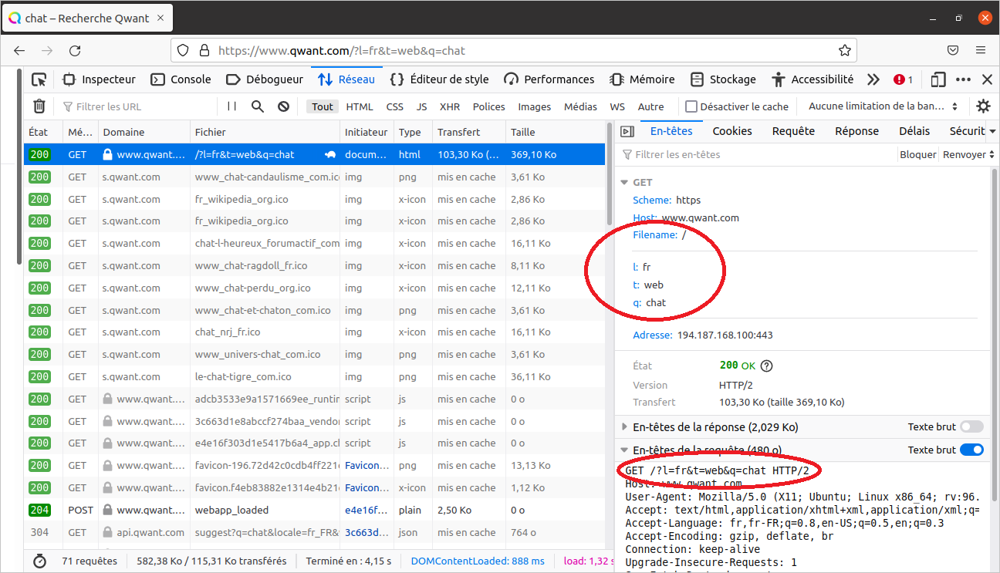
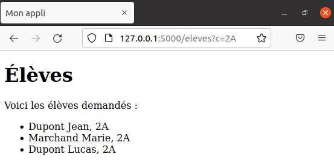

Objectif : Comprendre comment on peut passer des paramètres à un serveur pour qu’il fabrique la page Web demandée en fonction des valeurs de ces paramètres.
On a vu qu’un serveur est capable de fabriquer des pages Web en fonction de certaines informations. Nous allons voir dans cette activité comment on peut passer des informations au serveur via l’URL.
En tapant le mot “Qwant” dans un moteur de recherche, le premier lien devrait renvoyer vers la page d’accueil de ce moteur de recherche : https://www.qwant.com/?l=fr (c’est la route / de qwant.com).
Vous devez constater que l’URL se termine par
?l=fr, il s’agit d’un paramètre passé au serveurqwant.com. Nous allons voir comment cela fonctionne tout de suite.
1. Rendez-vous à cette URL et remplacez le fr à la fin par en. Vous devez constater que la page demandée (la même !) est désormais en anglais.
IMPORTANT :
? suivi des différents paramètres écrits sous la forme nom=valeur.&.2. Dans l’URL https://www.qwant.com/?l=fr, un paramètre est transmis au moteur de recherche.
Vous pouvez remettre la page en Français si vous le souhaitez avant de poursuivre.
3. Tapez le mot “chat” dans le champ de recherche puis validez
4. Pour obtenir les résultats pour le mot “robot”, il suffit de remplacer la valeur du paramètre q par robot. Le paramètre t correspond au type de recherche souhaité : en remplaçant sa valeur par images on obtient les images correspondant au mot cherché. Essayez tout cela !
5. Lancez les outils de développement Web du navigateur (touche F12) puis actualisez refaites une recherche dans Qwant et observez la première requête. Vous devez constater que la ressource demandée est / et que des paramètres ont été passés au serveur dans la requête (comme sur l’écran ci-dessous).

Remarques : Comme les paramètres passés au serveur sont écrits dans l’URL, il n’est pas possible de transmettre des informations secrètes de cette façon (mot de passe, numéro de carte bancaire, etc.). Dans les autres cas, cela peut s’avérer très pratique car il est alors possible de copier directement le lien complet, comme par exemple :
Prenez une minute pour repérer les paramètres et leurs valeurs dans ces URL.
En revanche, comme les navigateurs ont des limites sur la taille d’une URL, il ne faut pas que celle-ci soit trop longue, ce qui peut vite être le cas si la valeurs de paramètres représentent tout le code de certains programmes.

Voici la vidéo associée à cette activité :
Dans cet exemple on va travailler avec un tableau d’élèves représentés par des dictionnaires :
liste_eleves = [
{'nom': 'Dupont', 'prenom': 'Jean', 'classe': '2A'},
{'nom': 'Dupont', 'prenom': 'Jeanne', 'classe': 'TG2'},
{'nom': 'Marchand', 'prenom': 'Marie', 'classe': '2A'},
{'nom': 'Martin', 'prenom': 'Adeline', 'classe': '1G1'},
{'nom': 'Dupont', 'prenom': 'Lucas', 'classe': '2A'}
]
On va créer une route /eleves à laquelle on peut passer un paramètre c dont la valeur représente une classe. L’objectif est d’afficher à l’écran uniquement les élèves correspondant à la recherche. Par exemple, si on navigue vers l’URL /eleves?c=2A alors la page construite ne doit afficher que les élèves de 2A.
Ici, on utilise directement la table
liste_elevespour simplifier mais on pourrait très bien charger une telle table à partir d’un fichier CSV (comme on l’a vu dans le thème sur le Traitement des données en table) ou d’une base de données (programme de Terminale) pour coller davantage à la réalité.
Pour faire cela, on ajoute listes_eleves dans le script mon_app.py et on crée une nouvelle route /eleves comme ci-dessous :
mon_app.py
# ne pas oublier d'importer l'objet request
from flask import Flask, render_template, request
liste_eleves = [
{'nom': 'Dupont', 'prenom': 'Jean', 'classe': '2A'},
{'nom': 'Dupont', 'prenom': 'Jeanne', 'classe': 'TG2'},
{'nom': 'Marchand', 'prenom': 'Marie', 'classe': '2A'},
{'nom': 'Martin', 'prenom': 'Adeline', 'classe': '1G1'},
{'nom': 'Dupont', 'prenom': 'Lucas', 'classe': '2A'}
]
@app.route("/eleves")
def eleves():
# on récupère la valeur du paramètre
classe = request.args.get('c')
# si cette valeur existe (n'est pas None)
if classe:
# on sélectionne les élèves correspondants
eleves_selectionnes = [eleve for eleve in liste_eleves
if eleve['classe'] == classe]
else:
# sinon aucun élève n'est sélectionné
eleves_selectionnes = []
# on passe le tableau eleves_selectionnes au template
return render_template('eleves.html', eleves=eleves_selectionnes)
Analyse :
request qui contient toutes les informations inclues dans la requête HTTP.request.args est un dictionnaire contenant tous les paramètres passés dans l’URL et on peut accéder aux valeurs de paramètres grâce à leur nom : requests.args['nom_du_parametre'] mais il préférable d’utiliser la syntaxe requests.args.get('nom_du_parametre', '') qui permet de ne pas déclencher d’erreurs en cas d’absence de la clé (sa valeur est remplacée par ''). Ainsi, l’instructions classe = request.args.get('c', '') permet de stocker dans la variable classe la valeurs du paramètre.eleves_selectionnes. Sinon, ce tableau sera vide.eleves.html auquel on passe le paramètre eleves dont la valeur est le tableau eleves_selectionnes.Ensuite, on va pouvoir exploiter ce tableau dans le template eleves.html qu’il reste à écrire :
templates/eleves.html
<!DOCTYPE html>
<html lang="fr">
<head>
<meta charset="UTF-8">
<meta http-equiv="X-UA-Compatible" content="IE=edge">
<meta name="viewport" content="width=device-width, initial-scale=1.0">
<title>Mon appli</title>
</head>
<body>
<h1>Élèves</h1>
{% if eleves|length == 0 %}
<p>Aucun élève ne correspond à la recherche.</p>
{% else %}
<p>Voici les élèves demandés :</p>
<ul>
{% for eleve in eleves %}
<li>{{ eleve['nom'] }} {{ eleve['prenom'] }}, {{ eleve['classe'] }}</li>
{% endfor %}
</ul>
{% endif %}
</body>
</html>
Analyse : Cet exemple illustre toute la puissance des templates car on peut y écrire des structures Python (instructions, conditionnelles, boucles, etc.) grâce aux délimiteurs {% %}. Dans le “langage” des templates, il est important de noter que contrairement à Python, il faut fermer les différentes structures avec un {% end.. %}
On utilise une instruction conditionnelle {% if eleves|length == 0 %} pour tester si le tableau eleves transmis pas la fonction eleves() est vide. Si c’est le cas, on écrit un paragraphe indiquant que le recherche n’a pas abouti, sinon on affiche les élèves correspondants à la recherche.
Pour afficher les élèves, on utilise une boucle for qui parcoure tous les élèves du tableau eleves et qui affiche pour chacun d’eux, son nom, son prénom et sa classe. Chaque élève étant représenté par un dictionnaire, on accède aux valeurs grâce aux clés, exactement comme en Python.
Désormais, en naviguant vers l’URL http://127.0.0.1:5000/eleves?c=2A, le serveur fabrique et renvoie la page suivante :

Le moteur de template utilisé par Flask s’appelle Jinja, voici un lien vers sa documentation où vous trouverez tous les éléments de syntaxe permettant de créer du contenu dynamique dans un template : https://jinja.palletsprojects.com/en/3.0.x/.
Modifiez le script pour que l’on puisse passer un nom en paramètre via l’URL et construire la page qui affiche tous les élèves portant ce nom de famille.
Exemple : En naviguant vers http://127.0.0.1:5000/eleves?n=Dupont, on doit obtenir la liste des élèves dont le nom est “Dupont”.
Créer une fonction associée à une nouvelle route /imc à laquelle on peut passer deux paramètres :
Cette fonction doit renvoyer une page affichant l’IMC (Indice de Masse Corporelle) de l’individu.
Vous ne chercherez pas à gérer les erreurs de saisie d’un utilisateur (sauf si vous êtes en avance !).
Références :
Germain BECKER & Sébastien POINT, Lycée Emmanuel Mounier, ANGERS